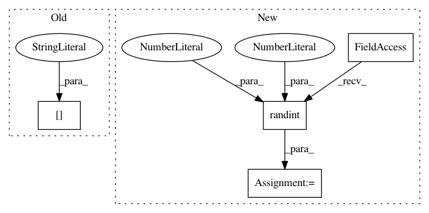

1ec0207376e3dcece97812f8ae40bc8d7ec9b208,stimulus_presentation/generate_spatial_gratings.py,,,#,25
Before Change
mywin.flip()
// offset
core.wait(trials["Duration"].iloc[ii])
fixation.draw()
outlet.push_sample([fre + 3, contrast, ori], local_clock())
mywin.flip()
After Change
// Setup trial list
frequency = np.random.binomial(1, 0.5, n_trials)
contrast = np.ones(n_trials, dtype=int)
orientation = np.random.randint(0, 4, n_trials) * 45
trials = pd.DataFrame(dict(frequency=frequency,
contrast=contrast,
orientation=orientation))
In pattern: SUPERPATTERN
Frequency: 3
Non-data size: 4
Instances
Project Name: alexandrebarachant/muse-lsl
Commit Name: 1ec0207376e3dcece97812f8ae40bc8d7ec9b208
Time: 2017-11-10
Author: hubert@interaxon.ca
File Name: stimulus_presentation/generate_spatial_gratings.py
Class Name:
Method Name:
Project Name: nilearn/nilearn
Commit Name: e2bf248a400175ac1a153cdba62147e9162a710f
Time: 2019-04-17
Author: gkiar07@gmail.com
File Name: nilearn/image/tests/test_resampling.py
Class Name:
Method Name: test_resample_identify_affine_int_translation
Project Name: jhfjhfj1/autokeras
Commit Name: a33f747920882f6cd857bbdb50050ea360a6f366
Time: 2020-11-19
Author: jhfjhfj1@gmail.com
File Name: tests/integration_tests/functional_api_test.py
Class Name:
Method Name: test_image_blocks